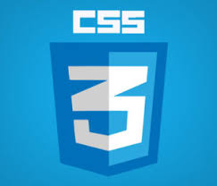

BELAJAR CSS
CSS adalah singkatan dari Cascading Style Sheets, yaitu bahasa pemrograman yang digunakan untuk menentukan tampilan dan format website. CSS berfungsi untuk mengatur gaya visual elemen pada halaman web, seperti font, warna, ukuran, dan jarak. CSS berperan penting dalam membuat website yang menarik, terstruktur, dan enak dipandang. CSS tidak dapat dipisahkan dari HTML, karena HTML merupakan fondasi dari sebuah website. HTML berfungsi sebagai sketsa, sedangkan CSS berfungsi sebagai cat dan kuas yang mempercantik tampilan website. CSS pertama kali diusulkan oleh Håkon Wium Lie pada tahun 1994, dan World Wide Web Consortium (W3C) merilis Rekomendasi W3C CSS (CSS1) pertama pada tahun 1996. Untuk membuat penulisan kode CSS lebih mudah dibaca dan dirawat, dapat menggunakan CSS preprocessor. Beberapa CSS preprocessor yang populer adalah Sass, LESS, Stylus, dan PostCSS.